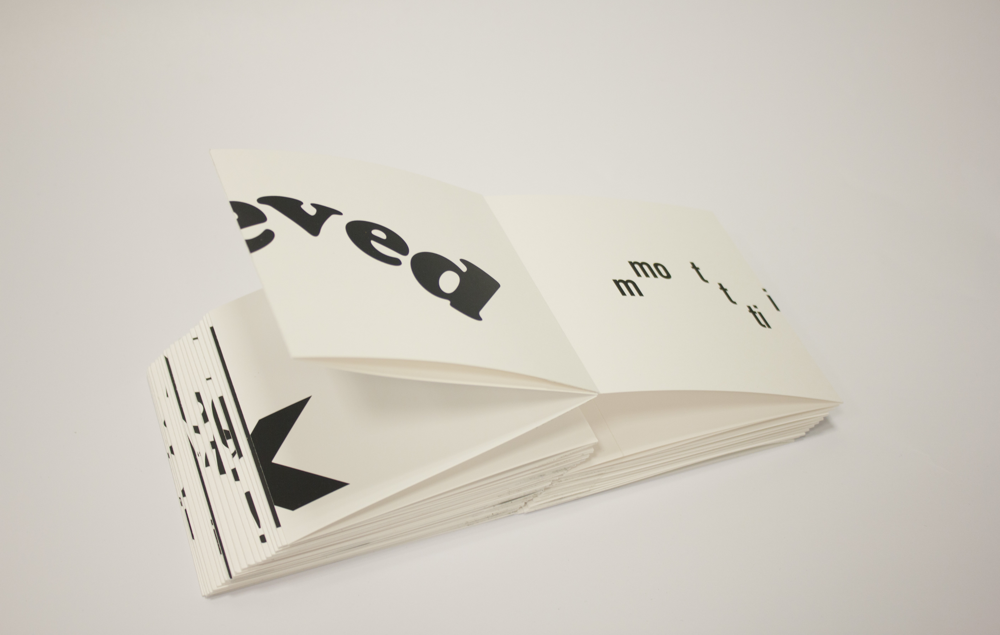

How Are You?
Overview
For the final project in my Advanced Design & Typography course, we were asked to propose a topic, research and build a body of work, and develop a process through which that work is accomplished. I decided to research the interaction and response to the default question "how are you?". When I asked this question to my friends, I noticed how the default answer was always "good". Why was this so? And was there a way to elicit a more sincere response? I decided to explore if and how responding anonymously would impact the results.
Tools
Google Forms, Adobe Illustrator, Adobe InDesign, Cardstock
Google Form
I posted a Google form during finals week through social media where my peers were able to answer the question. I chose about 30 1-3 word phrases from the 80 responses collected. For the most part, I wanted to stay true to the act of asking and responding to the question so I purposely made some repeats of the same mood. For example, I got about 5 "Happy" so I created 3 spreads on happy.

Type Samples
I am interested in how typography plays a role in conveying meaning
and a feeling to the viewer. These are some of the type explorations
I created from the responses. Without obviously illustrating the
letters to represent the meaning, I used placement, size, subtraction,
and distortion (as well as different fonts) to represent the mood.
My general process was to go through each word or phrase, look up the
definition, and translate it through one of the methods above.
For example, hopeful means a feeling or inspiring optimism about a
future event. I would then think about what that means in terms of
typography and design. To me, it was something light, sans-serif, gently
placed around each other in a cozy way.

Hand Bound Never-Ending Accordion
The final book was printed on cardstock and trimmed to 5" by 10" spreads.
I scored the paper to get a clean fold. The book is in essence never-ending.
There is no beginning or end, you can just keep flipping through it, or
open it all up! Through this, I convey
the idea of how our mood and feelings are constantly changing throughout
the day. There is no perfect or correct answer to 'how are you?', it
evolves and changes forms like this book.
To represent the variety of
answers, I chose to fold the pages right in the middle of each phrase's
spread. So each spread now has two phrases, juxtaposing people's different
moods.

